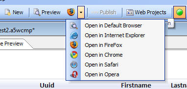
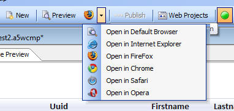

Live Preview using any Installed Browser
When doing a Live Preview from the Grid, Page Layout, and Tabbed UI builder, you can use any installed browser. You are not limited to your default browser.

When doing a Live Preview from the Grid, Page Layout, and Tabbed UI builder, you can use any installed browser. You are not limited to your default browser.
